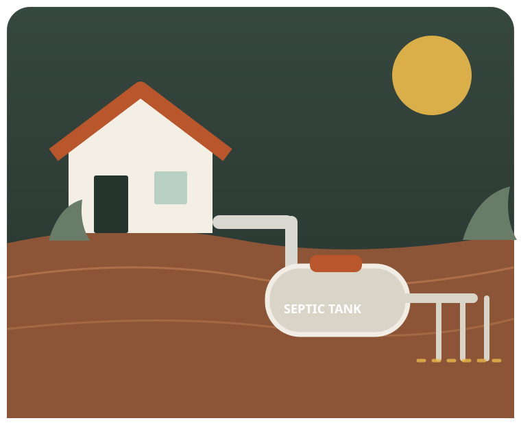

01
Septic Pumping
Routine pump-outs and tank cleaning to remove accumulated solids and keep your system on a sensible maintenance schedule.
Septic pumping →From routine tank pumping to repairs, drain field issues and complete system replacement, Bulldog Septic helps Central Oregon property owners keep septic systems working the way they should.

Bulldog Septic is a Terrebonne-based installer and pumper handling the everyday maintenance jobs and the bigger repairs that septic systems eventually need.
Routine pump-outs and tank cleaning to remove accumulated solids and keep your system on a sensible maintenance schedule.
Septic pumping →Help with backups, alarms, damaged components, drain field problems and other septic system failures.
Septic repair →New septic installation and replacement work when a system has reached the end of its usable life or a property needs a new setup.
Installation & replacement →Rock, soil, access and existing system conditions can all change what a septic job requires. Start with a clear look at what is actually happening on your property.
Recent public reviews repeatedly highlight responsive communication, knowledgeable crews, straightforward explanations and fair pricing.
Bulldog Septic has built a strong public review profile around professional service, responsiveness and clear communication.
Customers frequently describe the team as knowledgeable, professional, responsive and fair — including on repairs that turned into larger, more difficult jobs.Summary of recent public customer feedback
Call Bulldog Septic in Terrebonne and describe what is happening with your system.